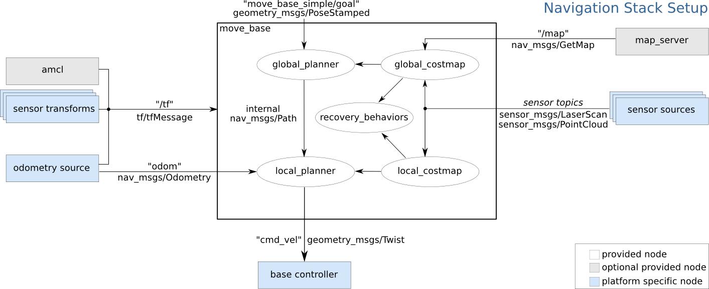
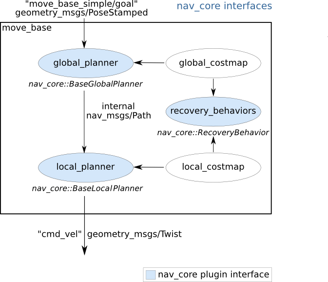
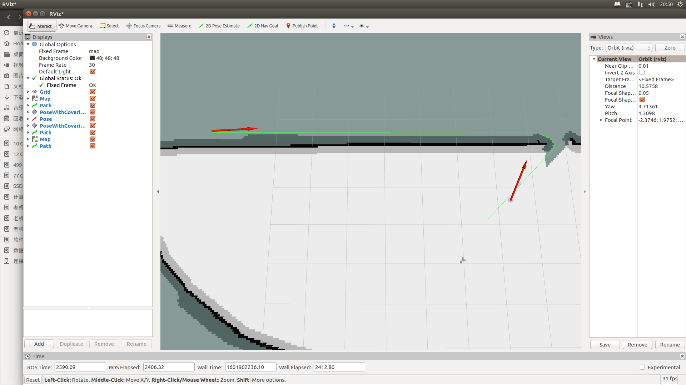

本文整理自硕士研究生期间的学习与实践记录，涉及的软件版本和依赖可能已经更新，请结合当前官方文档使用。
1. move_base的原理
ros wiki 地址。

move_base包含了基本的全局路径规划、局部路径规划、生成局部消耗地图、局部消耗地图以及行为恢复等功能。通过外界输入的自定位信息、里程计信息、传感器感知信息和地图信息对小车行为进行控制，其中小车最终的控制命令是由local_planner模块发出。
2. move_base的接口----nav_core
ros wiki 地址。

nav_core当前提供了三个C++ API 接口，分别是**BaseGlobalPlanner、BaseLocalPlanner和RecoveryBehavior**接口，通过这三个接口可以重写上图中global_planner、local_planner 、和recvovery_behaviors三个功能模块。
3. ROS自带的插件
ros wiki 地址。
3.1 全局路径规划插件(继承nav_core::BaseLocalPlanner接口)
-
global_planner一个快速，内插的全局规划被建立作为一个更灵活去替代
navfn功能模块。插件名称：global_planner/GlobalPlanner -
navfn一个基于栅格的用于机器人路径计算的导航功能全局路径规划模块，现在包括了Dijkstra和A*算法。插件名称：
navfn/NavfnROS -
carrot_planner一个获取用户指定路径目标点并尽可能尝试靠近该目标点的简单全局路径规划，即使目标点是障碍物。插件名称：
navfn/NavfnROS
3.2 局部路径规划插件(继承nav_core::BaseLocalPlanner接口)
-
base_local_planner提供了动态窗法(DWA)和航迹平滑法求进行局部控制的功能模型。
-
dwa_local_planner对于几何机器人，该功能模块提供比
base_local_planner的DWA更清晰、更容易理解的接口，以及更灵活的y轴变量的模块化DWA实现。 -
eband_local_planner -
teb_local_planner -
mpc_local_planner
3.3 行为恢复插件
clear_costmap_recoveryreotate_reccovery
3.4 插件的调用
对于全局路径规划，只需在move_base的配置launch文件中加入插件名称
<param name="base_global_planner" value="global_planner/GlobalPlanner"/>
4. 重写插件，加入自己的算法
本文参考以下文章：
a. ROS wiki 对Plugin的介绍以及使用介绍http://wiki.ros.org/pluginlib。
b. 一个写Astar 插件的github教程https://github.com/coins-lab/relaxed_astar，以及它配套的youtube视频链接。
c. 写一个简单的插件http://di3renlei.cn/info/2807
4.1 创建类的头文件
首先，创建的类必须继承父类nav_core::BaseGlobalPlanner，从官方给出的文档可以看出这是一个纯虚类，里面有三个虚函数：
- 虚析构函数：
~BaseGlobalPlanner() - 虚初始化函数：
initialize() - 虚计算路径函数：
makePlan()
我们要构造自己的插件必须重写这几个函数。
下面是添加插件的最小代码部分，是自己写算法必要和常见的步骤。
最小头文件定义如下：
/** include the libraries you need in your planner here */
/** for global path planner interface */
#include <ros/ros.h>
#include <geometry_msgs/PoseStamped.h>
#include <costmap_2d/costmap_2d_ros.h>
#include <costmap_2d/costmap_2d.h>
#include <nav_core/base_global_planner.h>
using std::string;
#ifndef GLOBAL_PLANNER_CPP
#define GLOBAL_PLANNER_CPP
namespace global_planner {
class GlobalPlanner : public nav_core::BaseGlobalPlanner {
public:
GlobalPlanner();
GlobalPlanner(std::string name, costmap_2d::Costmap2DROS* costmap_ros);
/** overridden classes from interface nav_core::BaseGlobalPlanner **/
void initialize(std::string name, costmap_2d::Costmap2DROS* costmap_ros);
bool makePlan(const geometry_msgs::PoseStamped& start,
const geometry_msgs::PoseStamped& goal,
std::vector<geometry_msgs::PoseStamped>& plan
);
};
};
#endif
代码解释：
代码：
#include <ros/ros.h>
#include <geometry_msgs/PoseStamped.h>
//以上两个为ros核心库和必要的位置消息类型
#include <costmap_2d/costmap_2d_ros.h>
#include <costmap_2d/costmap_2d.h>
//以上为costmap的头文件，可以直接调用initialize()函数中的costmap_ros地图信息进行路径规划
#include <nav_core/base_global_planner.h>
//该处为接口类头文件，插件必备
代码：
class GlobalPlanner : public nav_core::BaseGlobalPlanner {
//以公共成员类型继承nav_core::BaseGlobalPlanner
public:
GlobalPlanner();
GlobalPlanner(std::string name, costmap_2d::Costmap2DROS* costmap_ros);
/** overridden classes from interface nav_core::BaseGlobalPlanner **/
void initialize(std::string name, costmap_2d::Costmap2DROS* costmap_ros);
//initialize函数可以调用地图信息，可以完成地图的初始化等工作，该处不能阻塞。
bool makePlan(const geometry_msgs::PoseStamped& start,
const geometry_msgs::PoseStamped& goal,
std::vector<geometry_msgs::PoseStamped>& plan
);
//定义父类中的虚函数，并重写父类中的虚函数，这步必不可少
//最终计划将存储在方法的参数std::vector<geometry_msgs::PoseStamped>& plan
};
4.2 进行类实现
该部分对上面头文件的函数进行实现。
#include <pluginlib/class_list_macros.h>
#include "global_planner.h"
//register this planner as a BaseGlobalPlanner plugin
PLUGINLIB_EXPORT_CLASS(global_planner::GlobalPlanner, nav_core::BaseGlobalPlanner)
using namespace std;
//Default Constructor
namespace global_planner {
GlobalPlanner::GlobalPlanner (){
}
GlobalPlanner::GlobalPlanner(std::string name, costmap_2d::Costmap2DROS* costmap_ros){
initialize(name, costmap_ros);
}
void GlobalPlanner::initialize(std::string name, costmap_2d::Costmap2DROS* costmap_ros){
}
bool GlobalPlanner::makePlan(const geometry_msgs::PoseStamped& start, const geometry_msgs::PoseStamped& goal, std::vector<geometry_msgs::PoseStamped>& plan ){
plan.push_back(start);
for (int i=0; i<20; i++){
geometry_msgs::PoseStamped new_goal = goal;
tf::Quaternion goal_quat = tf::createQuaternionFromYaw(1.54);
new_goal.pose.position.x = -2.5+(0.05*i);
new_goal.pose.position.y = -3.5+(0.05*i);
new_goal.pose.orientation.x = goal_quat.x();
new_goal.pose.orientation.y = goal_quat.y();
new_goal.pose.orientation.z = goal_quat.z();
new_goal.pose.orientation.w = goal_quat.w();
plan.push_back(new_goal);
}
plan.push_back(goal);
return true;
}
};
有几个重要的事情需要考虑：
- 将计划器注册为
BaseGlobalPlanner插件：- 通过
PLUGINLIB_EXPORT_CLASS(global_planner::GlobalPlanner, nav_core::BaseGlobalPlanner)实现 - 所以必需包含
#include <pluginlib/class_list_macros.h>
- 通过
在start和goal参数分别用于获得初始位置和目标位置，start一般为机器人自定位位置，goal为机器人收到的目标位置信息。
代码解释：
bool GlobalPlanner::makePlan(const geometry_msgs::PoseStamped& start, const geometry_msgs::PoseStamped& goal, std::vector<geometry_msgs::PoseStamped>& plan ){
//以上的前两个参数都由movebase自行给定，而plan就是我们计算的路径
plan.push_back(start);
for (int i=0; i<20; i++){
geometry_msgs::PoseStamped new_goal = goal;
tf::Quaternion goal_quat = tf::createQuaternionFromYaw(1.54);
new_goal.pose.position.x = -2.5+(0.05*i);
new_goal.pose.position.y = -3.5+(0.05*i);
new_goal.pose.orientation.x = goal_quat.x();
new_goal.pose.orientation.y = goal_quat.y();
new_goal.pose.orientation.z = goal_quat.z();
new_goal.pose.orientation.w = goal_quat.w();
plan.push_back(new_goal);
}
plan.push_back(goal);
//通过push_back给容器压入路径信息，这里要特别注意的是，路径信息必须从start到goal，不然局部路径规划会不工作。
//上部分可以直接加入自己写的导航算法的函数计算出路径，然后再写入plan。
return true;
}
4.3 编译
- 在CmakeList中键入动态连接库，添加以下代码
add_library(global_planner_lib src/path_planner/global_planner/global_planner.cpp)
- 然后，在终端运行catkin_make在catkin工作区目录下生成二进制文件。
- 这将在lib目录
~/catkin_ws/devel/lib/中生成libglobal_planner_lib.lib库文件。
4.4 编写插件
基本上，重要的是按照插件说明页面中所述的创建新插件所需的所有步骤。
有五个步骤：
-
插件注册
首先，您需要通过导出将全局计划程序类注册为插件。为了允许类被动态加载，它必须被标记为导出类。
这是通过特殊宏
PLUGINLIB_EXPORT_CLASS来完成的。这个宏可以放在构成插件库的任何源（.cpp）文件中，但通常放在导出类的.cpp文件的末尾。
这已经在
global_planner.cpp中用指令完成了。示例：
PLUGINLIB_EXPORT_CLASS(global_planner::GlobalPlanner, nav_core::BaseGlobalPlanner)这将使
global_planner::GlobalPlanner类注册为move_base的nav_core::BaseGlobalPlanner的插件 -
插件说明文件
第二步是在描述文件中描述插件。
插件描述文件是一个XML文件，用于以机器可读格式存储有关插件的所有重要信息。
它包含有关插件所在的库的信息，插件的名称，插件的类型等。
在我们的全局计划程序的情况下，您需要创建一个新文件并将其保存在包中的特定位置我们的例子global_planner包），并给它一个名称，例如
global_planner_plugin.xml。插件描述文件（
global_planner_plugin.xml）的内容如下所示：<library path="lib/libglobal_planner_lib"> <class name="global_planner/GlobalPlanner" type="global_planner::GlobalPlanner" base_class_type="nav_core::BaseGlobalPlanner"> <description>This is a global planner plugin by iroboapp project.</description> </class> </library>在第一行
<library path =“lib / libglobal_planner_lib”>中，我们指定了插件库的路径。在这种情况下，路径是
lib/libglobal_planner_lib，其中lib是目录 ~/catkin_ws/devel/中的文件夹（请参阅上面的编译部分）。在此行 中,我们首先指定global_planner插件的名称，稍后我们将在move_base启动文件中用作参数,它指定要在nav_core中使用的全局计划器。
通常使用命名空间（global_planner），后跟/斜杠，然后使用类的名称（ GlobalPlanner）来指定插件的名称。
如果不指定名称，则名称将等于类型，在这种情况下将是
global_planner::GlobalPlanner。它建议指定名称以避免混淆。
该type指定实现插件的名称，我们示例里是，类
global_planner::GlobalPlanner，而该base_class_type指定实现插件名称的基类，我们示例里是，基类nav_core::BaseGlobalPlanner。在 标签提供有关该插件的简要说明。
有关插件描述文件及其相关标签/属性的详细描述，请参阅以下文档。
为什么我们需要此文件？
- 我们需要这个文件除了代码宏，允许ROS系统自动发现，加载和解释插件。
- 插件描述文件还包含重要信息，如插件的描述，不适合在宏中。
-
使用ROS包系统注册插件
为了让pluginlib查询跨所有ROS包的系统上的所有可用插件，每个包必须显式指定它导出的插件和哪些包库包含这些插件。插件提供程序必须在package.xml中指向其export标记块中的插件描述文件。注意，如果您有其他导出，他们都必须在同一导出字段。在我们的全局计划器示例中，相关行将如下所示：
<export> <nav_core plugin="${prefix}/global_planner_plugin.xml" /> </export>在${prefix}/将自动确定的完整路径文件global_planner_plugin.xml。有关导出插件的详细说明，请参阅以下文档重要说明：为了使上述export命令正常工作，提供包必须直接依赖于包含插件接口的包，在全局计划器的情况下为nav_core。因此，global_planner包必须在其package.xml中包含以下行：
<build_depend>nav_core</build_depend> <run_depend>nav_core</run_depend>这将告诉编译器关于nav_core包的依赖
-
查询ROS包系统可用的插件
可以通过rospack查询ROS包系统，以查看任何给定包可用的插件。例如：
rospack plugins --attrib = plugin nav_core这将返回从nav_core包导出的所有插件。这里是一个执行的例子：
akoubaa@anis-vbox:~/catkin_ws$ rospack plugins --attrib=plugin nav_core rotate_recovery /opt/ros/hydro/share/rotate_recovery/rotate_plugin.xml navfn /opt/ros/hydro/share/navfn/bgp_plugin.xml base_local_planner /opt/ros/hydro/share/base_local_planner/blp_plugin.xml move_slow_and_clear /opt/ros/hydro/share/move_slow_and_clear/recovery_plugin.xml global_planner /home/akoubaa/catkin_ws/src/global_planner/global_planner_plugin.xml dwa_local_planner /opt/ros/hydro/share/dwa_local_planner/blp_plugin.xml clear_costmap_recovery /opt/ros/hydro/share/clear_costmap_recovery/ccr_plugin.xml carrot_planner /opt/ros/hydro/share/carrot_planner/bgp_plugin.xml观察我们的插件现在可以在包global_planner下获得并且在文件/home/akoubaa/catkin_ws/src/global_planner/global_planner_plugin.xml中指定。您还可以观察nav_core包中现有的其他插件，包括carrot_planner/CarrotPlanner和navfn，其实现Dijkstra算法。现在，你的插件就可以使用了。
-
最后在move_base配置文件中调用
<launch>
<node pkg="move_base" type="move_base" respawn="false" name="move_base" output="screen" clear_params="true">
<param name="base_global_planner" value="global_planner/GlobalPlaner"/>
</node>
</launch>
5. 把A*写成插件后的效果
